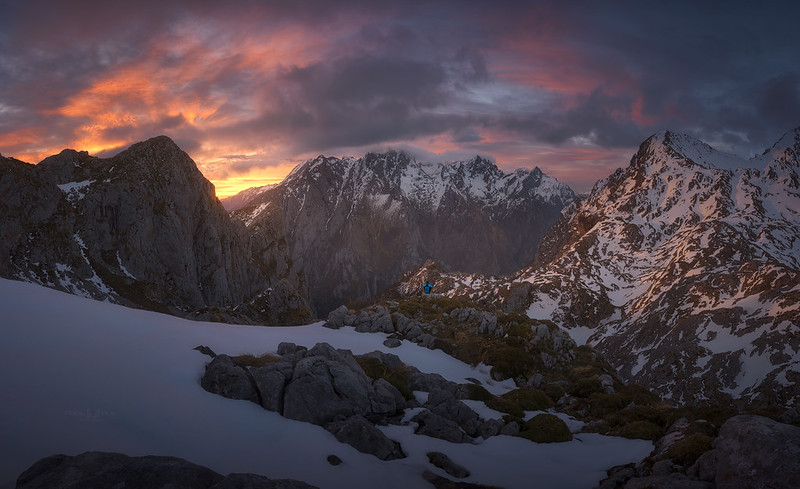
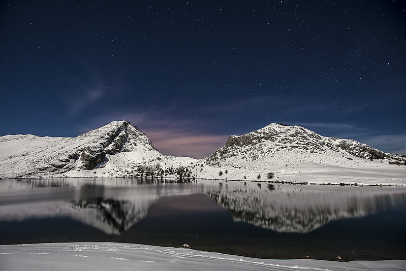
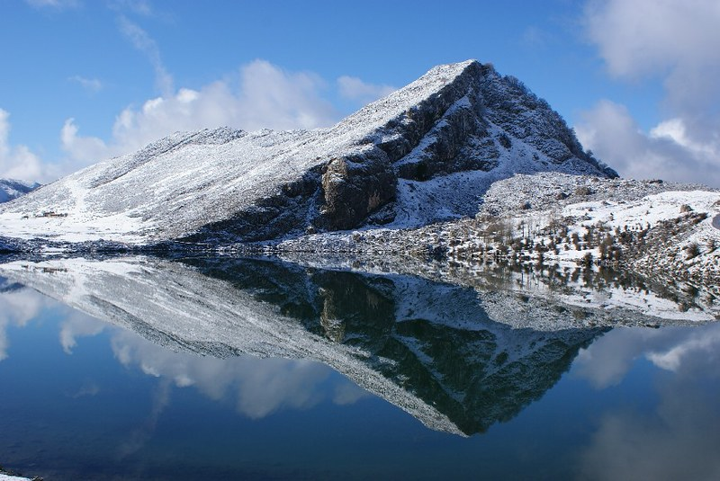
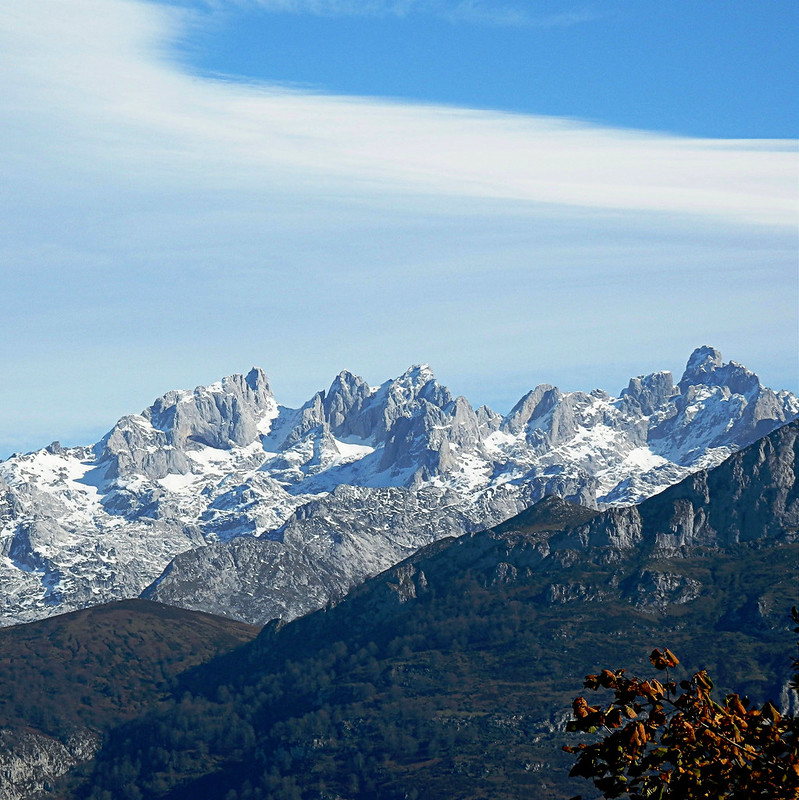

RUTAS DE PICOS DE EUROPA
Lagos de Covadonga
Los lagos de Covadonga son dos pequeños lagos, el Enol y el Ercina, de origen glaciar situados en la parte asturiana del parque nacional de los Picos de Europa, en el macizo occidental de dicha cadena montañosa. Existe un tercer lago, el Bricial, que solo tiene agua durante el deshielo, pero también pertenece al conjunto. Estos lagos son esenciales si decide enimarse a visitar los Picos de Europa; a continuación podrán ver algunas de sus hermosas vistas:
VERANO


INVIERNO



